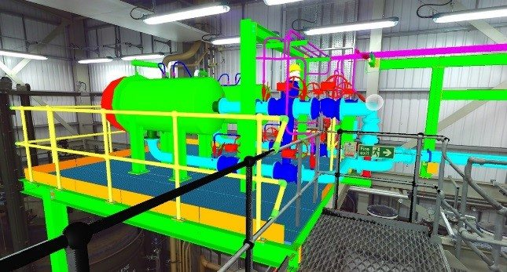

BIM Use: Existing Conditions Modeling

Existing Conditions
A process in which a project team develops a 3D model of the existing conditions for a site, facilities on a site, or a specific area within a facility.
This model can be developed in multiple ways: including laser scanning and conventional surveying techniques, depending on what is desired and what is most efficient. Once the model is constructed, it can be queried for information, whether it is for new construction or a modernization project.
- Increase quality of design with accurate representation of existing conditions such as existing buildings, utilities & topography.
- Increase quality of constructability analysis with accurate representation of building shell including:
- Mezzanine constructability
- New interior doors at sloping floor
- Increase quality of site logistics at with accurate representation of building shell for equipment and material loading
- Enhances the efficiency and accuracy of existing conditions documentation
- Provides documentation of environment for future uses
- Aids in future modeling and 3D design coordination
- Provides an accurate representation of work that has been put into place
- Real-time quantity verification for accounting purposes
- Provides detailed layout information
- Pre-Disaster planning
- Post-Disaster record
- Use for visualization purposes
- Building Information Model modeling software
- Laser scanning point cloud manipulation software
- 3D Laser scanning
- Conventional surveying equipment
- Surveyor establishes control points on site, including model base-point, or origin
- Surveyor documents locations of existing conditions such as buildings, utilities and topography
- Design Team precisely locates existing conditions in model and designs new systems
| Team Competencies Required: |
- Ability to manipulate, navigate, and review a 3D model
- Knowledge of Building Information Model authoring tools
- Knowledge of 3D laser scanning tools
- Knowledge of conventional surveying tools and equipment
- Ability to sift through mass quantities of data that is generated by a 3D laser scan
- Ability to determine what level of detail will be required to add “value” to the project
- Ability to generate Building Information Model from 3D laser scan and/or conventional survey data